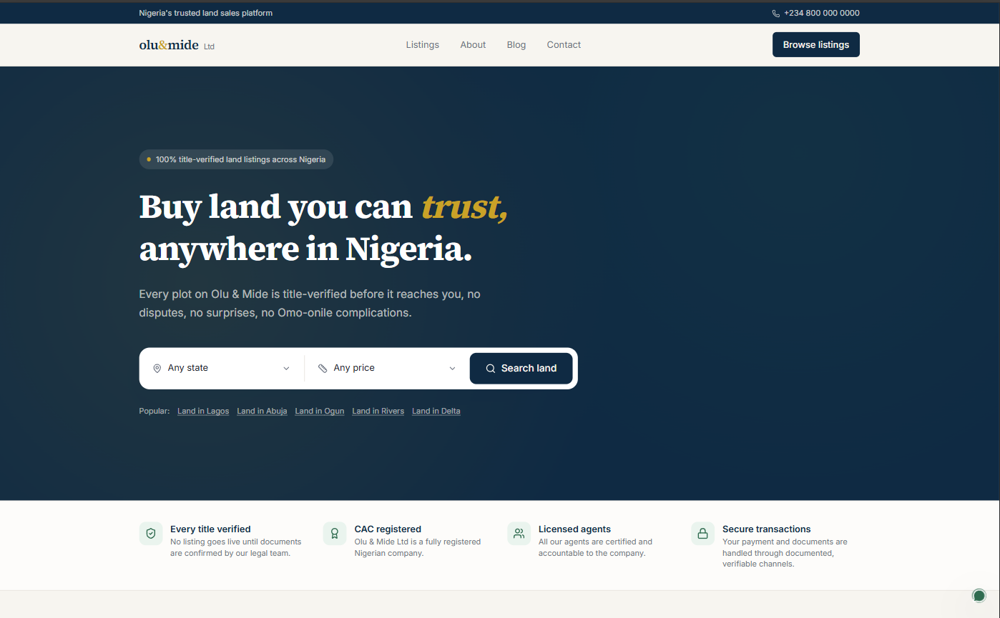
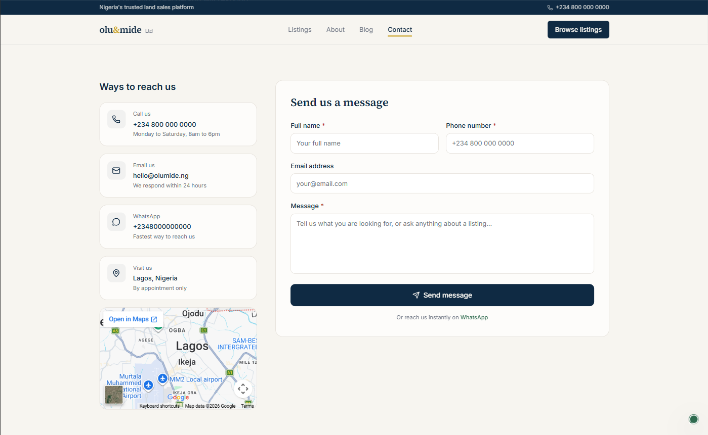

Olu & Mide Ltd
Verified land sales platform
A full-stack real estate platform solving land fraud in the Nigerian property market — built from product strategy and buyer persona research through to a secure, production-grade application with a public listings site and a fully separate authenticated admin dashboard.
Land fraud is one of the most common and costly risks in the Nigerian property market. Buyers regularly lose significant sums to disputed titles, multiple sales of the same plot, forged documents, and informal Omo-onile land claims. Most existing platforms treat land the same way they treat houses and apartments — with no specific attention to the legal and trust verification process that land transactions uniquely require.
Olu & Mide was built around a single core idea: make every piece of trust-relevant information about a plot visible to the buyer before they ever speak to an agent, and make the verification process itself a visible, branded feature of the platform.


Title verification system
Every listing carries a visible badge reflecting its actual legal status — C of O, Gazette, Excision, Governor's Consent, or Pending — backed by a documented internal verification process.
Live filtering and search
Buyers filter by state, price, plot size, and title status with instant client-side updates and no page reloads. Verified-only toggle included.
WhatsApp-first contact design
Every contact point deep-links into WhatsApp with a pre-filled, context-aware message — built for how this market actually communicates.
Secure admin dashboard
A fully separate authenticated back office with server-side session validation. Protected content is never sent to an unauthenticated browser, even momentarily.
Multi-channel lead capture
Every page that can generate a lead feeds into a single unified leads system — removing the risk of enquiries getting lost across disconnected channels.
Full SEO infrastructure
Dynamically generated sitemaps, JSON-LD structured data on every listing for rich search results, and full Open Graph configuration for clean social sharing.
the interface is impressive and the user flow is top-notch.